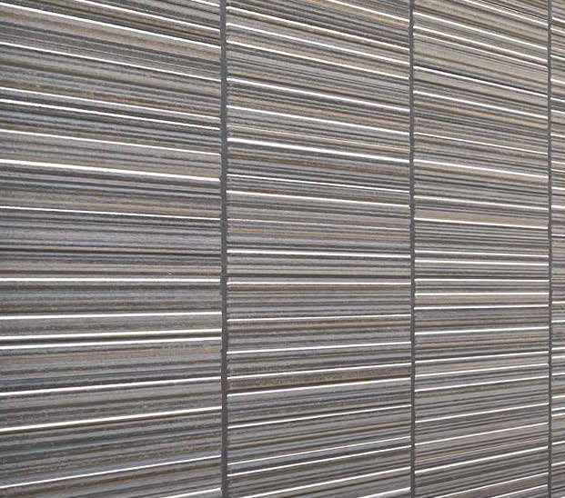
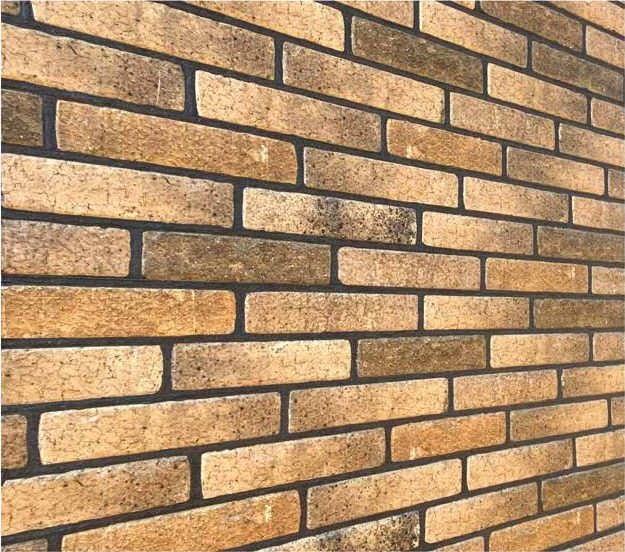
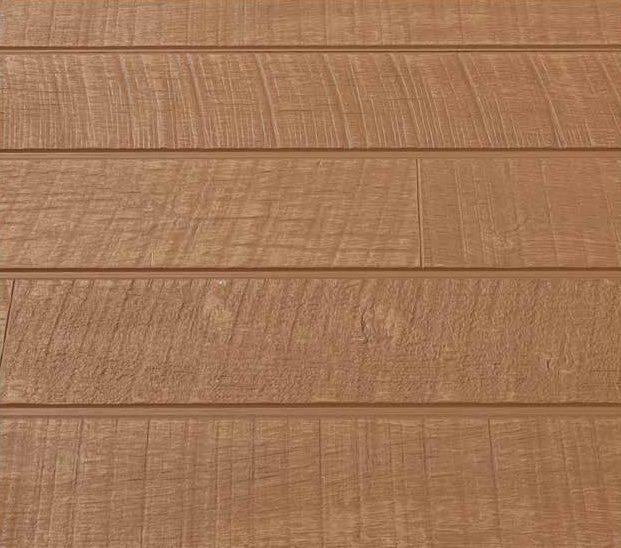

세라믹사이딩 제품 특장점
세라믹사이딩 제품의 특장점들을 소개합니다.
아래 코팅·공법 설명은 제조사 기술 자료를 바탕으로 정리했습니다. 적용 코팅과 성능은 제품에 따라 다르므로 주문할 제품의 사양을 확인하세요. 외벽 표면, 줄눈·실링, 고정부는 정기적인 점검과 상태에 따른 보수가 필요합니다.
판이 튼튼한 이유
얼어도 덜 상하는 구조
판 속에 섞인 나무 가루를 크게 확대하면 벌집처럼 작은 구멍이 촘촘합니다. 겨울에 판에 스민 물이 얼면 부피가 늘어나는데, 이 작은 구멍들이 늘어난 부피를 받아 주어 판이 갈라지는 것을 줄여 줍니다.


잘 휘지 않고 충격에 강합니다
원료를 틀에 넣고 강하게 눌러 만들어(압착 성형) 판 속에 빈 층이 없습니다. 그래서 잘 휘지 않고 부딪혀도 잘 깨지지 않습니다. 뜨거운 고압 증기로 굳혀(오토클레이브) 더위·추위에도 크기 변화가 적습니다.


방화·내화 성능 확인
자재의 성능과 벽체의 성능을 구분하세요
외벽재 자체의 화재 관련 성능과 외벽 전체 구성의 내화 성능은 구분하여 확인해야 합니다. 제조사의 방화·내화 자료도 외벽재와 하지·단열재 등 벽체 구성별로 나뉘어 있습니다.
해외 인증이나 시험 자료를 국내 판매 제품의 인정 성능으로 그대로 적용할 수는 없습니다. 제품명·두께, 벽체 구성, 시험·인정 자료와 시공 조건을 함께 확인하세요.
저탄소 원료
남는 목재를 원료로 씁니다
쓰고 남은 자투리 목재나 얇은 목재를 잘게 부숴 원료로 다시 씁니다. 만드는 과정에서 나오는 이산화탄소를 줄이려는 방식입니다.
목재는 CLT(구조용 목재), 하지재, 외장재처럼 여러 건축 자재로 이어서 쓰입니다.


단열 성능
열을 덜 전달합니다
세라믹사이딩은 일반 모르타르(시멘트 미장) 벽보다 열을 덜 전달합니다. 그래서 여름 더위와 겨울 추위가 실내로 덜 들어와 쾌적한 실내에 도움이 됩니다.


| 구분 | 열전도율 |
|---|---|
| 일반 모르타르 벽 | 1.26 W/mK |
| 세라믹사이딩 16mm | 0.26 W/mK |
※ 표의 열전도율은 제조사 시험 자료의 평균값입니다. 숫자가 작을수록 열이 덜 전달됩니다. 재료 자체의 값이라, 벽 전체의 단열 성능은 단열재와 벽체 구성에 따라 달라집니다.
무늬 인쇄 기술
울퉁불퉁한 면에도 무늬를 고르게
최신 잉크젯 방식은 판 표면이 울퉁불퉁해도 무늬를 고르게 찍습니다. 그래서 돌·벽돌·나무의 결과 색을 실물에 가깝게 살릴 수 있습니다.

판마다 조금씩 다른 색
튀어나온 곳과 들어간 곳에 각각 다른 색을 줄 수 있어 마감이 자연스럽습니다.
같은 무늬가 똑같이 되풀이되지 않아 판마다 색이 조금씩 다릅니다. 그래서 벽 전체를 보면 예전 인쇄 방식보다 자연스럽습니다.

색을 입히는 다섯 가지 방법


실제 벽면 가까이 보기
실제 건물 벽면을 가까이 찍은 사진입니다. 같은 무늬 안에서도 조각마다 색과 결이 조금씩 다릅니다.









셀프클리닝 코팅
빗물에 때가 씻겨 내려가는 원리
이 코팅(마이크로 가드)은 물과 잘 어울리는 성질(친수성)이 있어 표면에 아주 얇은 물막이 생깁니다. 때가 벽에 바로 달라붙지 않고 물막 위에 얹혀 있다가, 비가 오면 빗물과 함께 흘러내립니다.
적용·관리 안내 코팅 적용 여부는 제품별로 다릅니다. 빗물이 닿지 않는 부분이나 오염 종류에 따라 청소가 필요하며, 정기적인 점검·관리를 권장합니다.


플래티넘 코팅
햇빛·비에 강한 도료
플래티넘 코팅은 외벽 표면의 변색·퇴색을 줄이도록 설계된 고내후성 코팅입니다. 제조사는 프리미엄 시리즈와 오페리아 시리즈에 이 코팅을 표기합니다. 재도장 시기는 사용 환경, 표면 상태와 제조사의 유지관리 안내에 따라 판단해야 합니다.
자외선을 견디는 원리
제조사는 코팅의 실록산 결합 에너지(443 kJ/mol)와 파장 290 nm인 자외선의 에너지(413 kJ/mol)를 비교하여 내후성을 설명합니다. 이는 코팅의 원리 설명이며, 외벽 전체가 자외선 손상에서 완전히 보호된다는 의미는 아닙니다.

보증 기간·대상·적용 지역과 부자재·시공 조건은 실제 구매 제품의 보증서를 확인하세요. 제조사 보증 안내가 모든 판매 제품에 그대로 적용되는 것은 아닙니다.
하이퍼코팅
자외선에 의한 도막 열화를 줄이는 코팅
하이퍼코팅은 자외선에 의한 도막 열화와 변색·퇴색을 줄이도록 설계된 코팅입니다. 제조사가 안내하는 기대 수명과 보증 기간은 서로 다른 개념이며, 재도장 시기나 국내 판매 제품의 보증을 일괄적으로 정하는 기준은 아닙니다. 적용 코팅, 관리 방법과 보증 조건을 제품별로 확인하세요.


건식 공법
물을 쓰지 않는 시공
판 뒤에 공기가 드나드는 틈을 두고 붙이는 방식입니다. 벽 속 습기가 이 틈으로 빠져 결로가 줄고, 여름 햇볕의 열기도 덜 들어옵니다.
물을 쓰는 미장 대신, 하지 위에 판을 고정하는 시공입니다. 아연 각관(또는 레인스크린)을 500mm 간격으로 세우고, 16mm 세라믹사이딩을 전용 클립으로 고정합니다. 맨 아래에는 하부 후레싱을 둡니다.

벽 종류에 따라 클립이 다릅니다
- 콘크리트(RC) 벽: 5mm 클립을 씁니다. 단열재를 붙인 벽에 아연 각관을 앵커·화스너로 세로로 고정합니다. 각관은 가로 500mm 간격, 고정은 세로 1,500mm 간격입니다(도면 표기).
- 목조 벽: 15mm 클립을 씁니다. 벽 전체에 투습방수지를 두르고 하지를 500mm 간격으로 세웁니다. 맨 아래는 하부 후레슁과 사이딩 아래 끝 사이를 10~15mm 띄웁니다. 맨 위(상부 후레슁)와 창 위·아래에는 30~40mm 틈을 두어 공기가 위로 빠지게 합니다.


부자재별 단면과 창·모서리 마감 상세는 부자재 쪽의 시공 상세도에서 볼 수 있습니다.
통기 공법
사이딩과 투습방수지 사이에 공기가 흐르는 틈(통기층)을 둡니다. 실내에서 나온 습기가 이 틈으로 빠져나가 벽 속 결로를 줄이고, 여름 햇볕의 열기도 틈을 타고 위로 빠져나가 실내로 덜 들어옵니다.
바깥에서 안쪽으로, 벽의 구성
- 세라믹사이딩 16mm바깥 마감
- 통기층공기가 흐르는 틈
- 투습방수지습기는 내보내고 빗물은 막음
- 단열재열이 드나드는 것을 줄임
- 실내벽 안쪽


지진에 대비한 고정 방식
외벽이 가벼우면 지진 때 집의 부담이 줄어듭니다
벽에 붙는 마감재가 무거울수록, 땅이 흔들릴 때 건물이 받는 힘도 커집니다.
제조사는 세라믹사이딩의 비교적 가벼운 구성과 전용 고정 방식이 지진 시 외벽의 부담을 줄이는 데 도움을 준다고 안내합니다. 실제 중량과 거동은 제품 두께, 벽체 구성과 시공 방식에 따라 달라집니다.
클립이 흔들림의 힘을 나눠 받습니다
제조사의 전용 클립 공법은 구조체의 변형에 따른 부담을 분산하여 외벽의 균열·탈락 위험을 줄이도록 설계됩니다. 피해가 발생하지 않는다는 보장은 아니며, 적용 제품의 시공 지침과 고정부·하지 구성을 확인해야 합니다.


시리즈별 특징 비교
세라믹사이딩은 네 가지 시리즈로 나뉩니다. 시리즈마다 무늬 수와 표면 코팅이 다릅니다.
| 프리미엄 | 최고급형 · 무늬 2종(에토프·알모니) 플래티넘 코팅 + 셀프클리닝 코팅 |
|---|---|
| 오페리아 | 고급형 · 무늬 9종(비브릭·오야이시 등) 플래티넘 코팅 + 셀프클리닝 코팅 |
| 케이 | 중급형 · 무늬 8종(키앙카·미스틱 등) 셀프클리닝 코팅 |
| 브이 | 기본형 · 무늬 7종(리가스톤·코르모스톤 등) 셀프클리닝 코팅 |
※ 제조사 표기 기준입니다. 네 시리즈 모두 두께 16mm · 폭 455mm · 길이 3,030mm · 약 26kg/장, 포장은 2장/팩 · 80장/팔레트입니다. 코팅 적용은 품번별로 다를 수 있으니 주문 전에 확인해 주세요.
점검·관리
세라믹사이딩도 오래 쓰려면 손질과 점검이 필요합니다. 시공 때 마감을 꼼꼼히 하고, 그 뒤에는 정기적으로 살펴 주세요.
- 자른 면: 판을 자른 면에는 프라이머를 발라 둡니다.
- 못 자리: 못 자리 등 작은 흠은 퍼티로 메우고 터치업 페인트로 색을 맞춥니다.
- 이음(실링): 판과 판 사이 이음은 프라이머를 바른 뒤 전용 실란트로 채웁니다. 실링이 갈라지거나 떨어진 곳이 없는지 정기적으로 봅니다.
- 표면 오염: 빗물이 닿지 않는 처마 밑 등은 오염이 남을 수 있어 가끔 청소가 필요합니다.
- 고정부: 후레싱·모서리 마감재와 고정부가 들뜨지 않았는지 살피고, 상태에 따라 보수합니다.
내 건물에 맞는 선택으로 이어가세요.
3D 견적 앱에서 건물과 자재비를 살펴보거나, 세라믹사이딩 제품 특장점의 규격·납품을 상담하세요.